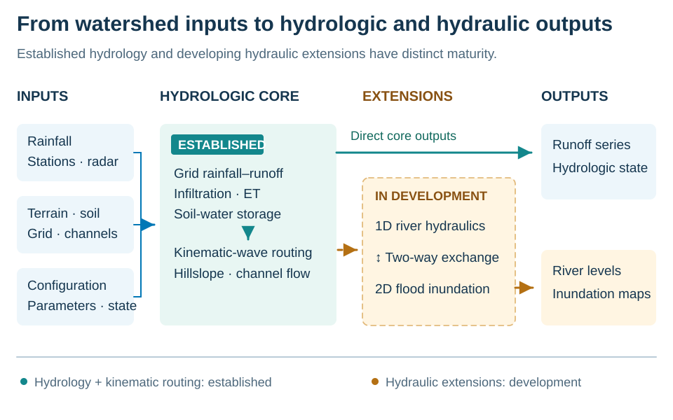
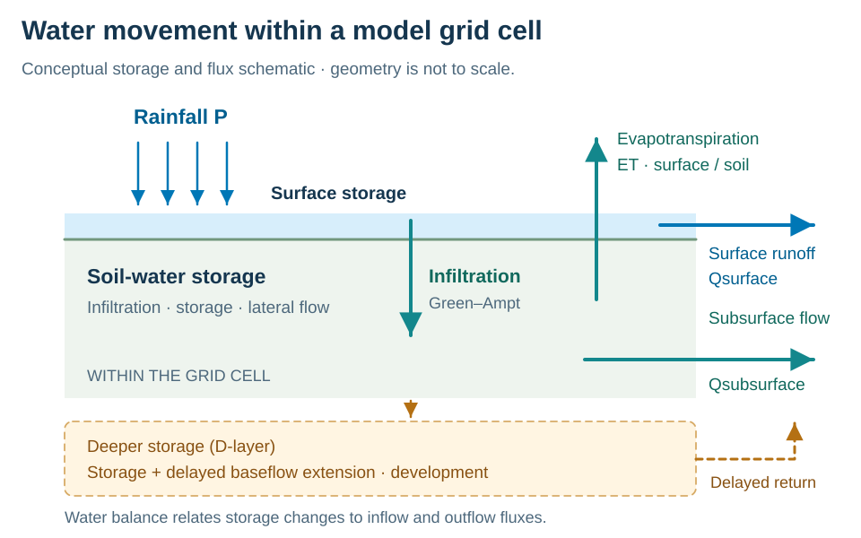
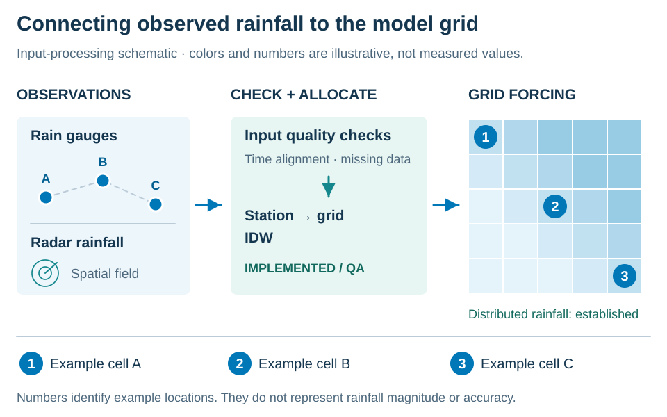
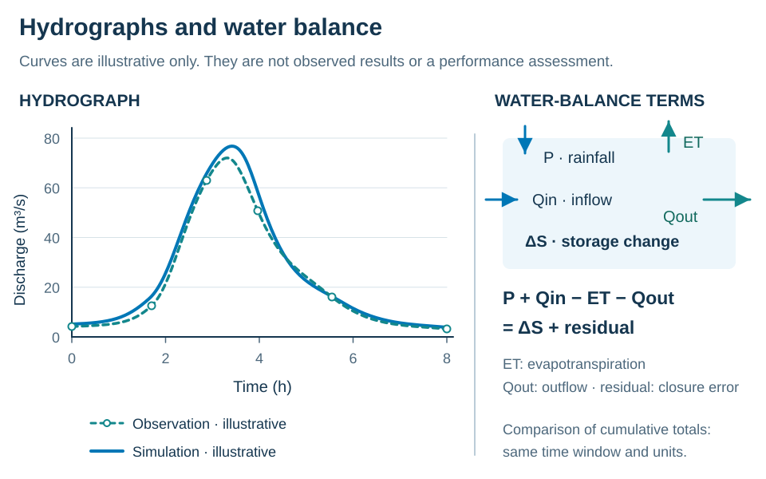
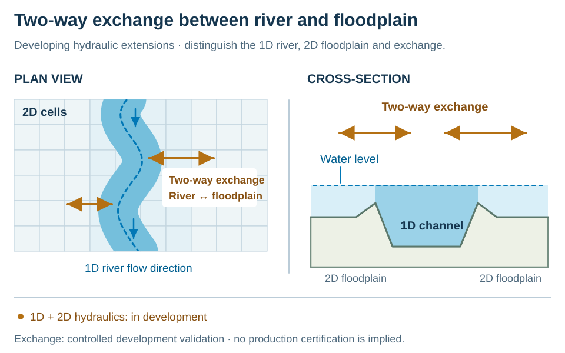
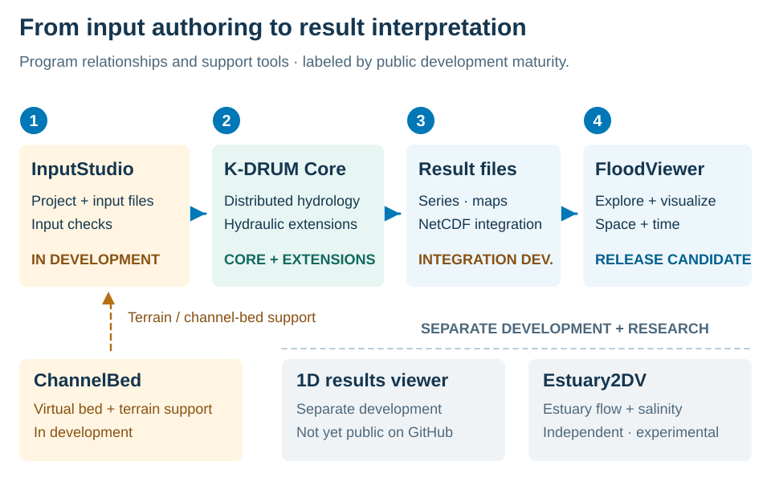

Grid hydrology and runoff routing
Spatial rainfall, infiltration, surface/subsurface runoff and kinematic-wave routing form the hydrologic foundation.
Water flow, from watershed to river
K-water Grid-based Distributed Rainfall rUnoff Model
Distributed hydrology that represents rainfall and the spatial differences of a watershed.
Developed by K-water, K-DRUM connects rainfall, infiltration, storage and runoff on computational grids. River hydraulics and floodplain analysis are active extensions of this hydrologic foundation.

Rainfall location, terrain, soil and storage states shape the movement of water across computational cells.
Spatial rainfall, infiltration, surface/subsurface runoff and kinematic-wave routing form the hydrologic foundation.
K-DRUM connects soil water, evapotranspiration and snow storage/melt through time for continuous watershed simulation.
1D networks, hydraulic structures, 1D–2D exchange and floodplain analysis have feature-specific development and validation boundaries.

K-DRUM updates grid-cell storage through time to connect rainfall, infiltration, evapotranspiration and runoff. Initial states and continuous forcing are key conditions for interpreting results.

Spatial rainfall inputs are station or gridded data mapped to computational cells with consistent intervals and units. Missing periods and mapping errors can affect runoff calculations.

Technical overviews, inputs, computation and development status for 45 repository-tracked capabilities and a separate 1D results viewer in development.
46 entries
K-DRUM applies gauge, radar or gridded rainfall spatially to computational cells.
Spatial rainfall forcing connects gauge time series or radar and gridded rainfall fields to K-DRUM computational cells. Spatial differences in rainfall enter cell-level runoff calculations; input intervals and spatial allocation define the resulting forcing field.
Spatial rainfall forcing is established through public radar and gridded-rainfall applications.
K-DRUM rainfall input provides multiple station-to-grid mapping paths.
Thiessen and IDW provide distinct paths for mapping gauge rainfall to computational cells. K-DRUM uses the resulting cell rainfall as runoff forcing, with consistency of these mapping paths covered by rainfall-input QA.
Thiessen and IDW station-to-grid paths are implemented in the current Core and subject to regression QA.
The elevation-corrected IDW input path combines rainfall mapping with quality checks.
Elevation-corrected IDW combines elevation adjustment and data-quality checks within rainfall mapping. Its output feeds grid rainfall forcing; quality-check findings and mapped rainfall describe distinct aspects of the input data.
Elevation-corrected IDW and rainfall QC are implemented quality-assessment functions in the current forcing path.
Run QA reports summarize observed, predicted and missing forcing periods.
Rainfall completeness assessment counts observed, forecast and missing forcing periods associated with a run. The duration summary in the run report describes data composition and gaps; it is neither reconstructed missing rainfall nor a runoff-accuracy metric.
Rainfall completeness summaries are implemented QA outputs connected to current run reporting.
Input prechecks are under development to reduce spatial, temporal, connectivity and range errors before simulation.
Input prechecks are under development to examine spatial and temporal coverage, connectivity and value ranges before simulation. Findings describe input consistency and run readiness, a distinct assessment from the accuracy of numerical results.
Input prechecks remain in development as consistency checking is integrated across Core and InputStudio.
Green-Ampt infiltration is a core process that partitions rainfall between soil entry and surface excess.
K-DRUM uses Green-Ampt infiltration to distinguish water entering the soil from rainfall excess. Wetting-front-based infiltration connects soil water entry with excess contributing to surface runoff and provides a basis for subsequent runoff routing.
Green-Ampt infiltration is an established formulation documented in public K-DRUM research.
K-DRUM calculates grid-cell storage and surface/subsurface runoff, then routes runoff downstream.
Surface and subsurface runoff processes connect soil-layer storage with water leaving a cell. K-DRUM calculates cell storage and runoff, then transfers the generated runoff downstream to form river inflow.
Surface and subsurface runoff are established distributed-hydrology functions of the historical K-DRUM model family.
Continuous simulation in K-DRUM carries model states across events for seasonal and long-term modeling.
Continuous and long-term simulation carries storage states from one time step into the next, including periods between rainfall events. State updates form seasonal and long-term runoff and water balances; this continuity distinguishes the process from independent event calculations.
Continuous and long-term simulation is established through public long-term watershed-runoff applications.
Evapotranspiration calculations link demand with soil-layer storage and root-zone water.
Evapotranspiration calculations connect demand under weather and soil conditions with soil-layer storage and root distribution. Storage changes associated with evapotranspiration enter subsequent soil-water states and the continuous water balance.
Evapotranspiration and soil-water accounting are established continuous-hydrology functions with ongoing QA modernization.
K-DRUM snow processes connect snow storage and melt with continuous watershed states.
Snow processes connect snowfall and temperature with snow accumulation and melt. Meltwater contribution to runoff and remaining snow storage enter long-term watershed states, distinguishing the time of snowfall from its contribution to runoff.
Snow accumulation and melt are established through public long-term snowmelt applications.
Warm-up stabilizes initial hydrologic states while diagnosing target-flow mismatch.
Warm-up is an initialization process that iteratively adjusts soil and runoff states while diagnosing mismatch with target-point discharge. Its results support initial-state stabilization and convergence assessment, with convergence behavior depending on the basin and initial conditions.
Warm-up is integrated in the current Core as an implemented QA function; initial-state convergence remains basin-specific.
HotStart resumes calculation from saved model states with checkpoint and consistency controls.
HotStart is a state-management function that reads model states saved at a checkpoint and resumes computation. Consistency controls connect the saved state and restart conditions so that subsequent simulation continues from the earlier calculation state. Its scope is state storage, restoration and restart, distinct from iterative initial-state stabilization through warm-up.
HotStart is an implemented checkpoint and state-restart capability under QA in the current Core.
The D-layer is under development to represent long recession response through deeper storage, delayed return and loss processes.
The D-layer extension connects deeper-storage water level and volume with delayed return and loss processes. It is a development path for representing long recession and low-flow response through the baseflow contribution of slowly released water.
D-layer and delayed baseflow return remain under development as extensions to long-term storage and baseflow representation.
Hillslope runoff and river routing use distinct slope representations.
K-DRUM applies separate slope variables to hillslope runoff and channel flow paths. Each terrain slope enters its corresponding flow calculation; hillslope and channel slopes are distinct terrain conditions, rather than successive inputs and outputs.
Separate hillslope and channel slopes are implemented in current routing paths and subject to QA.
Hillslope routing transfers runoff downstream using the established kinematic-wave formulation.
Hillslope kinematic routing calculates the downstream transfer of runoff generated on grid-cell hillslopes. It connects runoff generation to water movement across hillslopes, with a different routing domain from kinematic routing within channels.
Hillslope kinematic routing is an established routing formulation documented in public K-DRUM research.
Channel routing transfers collected flow through river cells using channel geometry, slope and roughness.
Channel kinematic routing transfers collected channel flow, including lateral inflow, downstream. Channel length, width, slope and roughness define its geometric and hydraulic conditions, with downstream discharge forming the routing output.
Channel kinematic routing is an established foundation of historical K-DRUM discharge routing.
River infiltration calculations limit exchange with deeper storage by hydraulic potential and available storage.
River infiltration coupling is under development to calculate water transfer from the river to the D-layer. Infiltration potential and available deeper-storage capacity jointly limit the transfer, which links river and D-layer accounting.
River infiltration to deeper storage is a current development capability linked to D-layer water accounting.
ChannelBed is under development to supplement channel-bed and low-flow geometry where surface DEMs are insufficient.
ChannelBed is a terrain-support tool that supplements channel-bed and low-flow geometry using sources such as a DEM and river centerline. Its products are terrain and bed data for 1D and 2D hydraulic analysis, rather than calculated water levels or discharge.
ChannelBed remains in development as a reusable terrain and channel-bed preparation tool.
Basin water-balance assessment tracks precipitation, ET, outlet flow, storage change and internal fluxes to evaluate closure.
Basin water-balance assessment connects rainfall and inflow, evapotranspiration and outflow, and storage changes over a common accounting domain to calculate closure error. Tracking internal fluxes distinguishes transfers within the basin from boundary transfers; closure error is a different measure from agreement with observed discharge.
Basin water-balance assessment is implemented QA integrated with current Core reporting and validation.

The 1D-2D exchange water balance applies the same exchange flux with opposite signs across both domains.
The 1D-2D exchange water balance assesses domain accounting in which the same exchange flux enters river and floodplain with opposite signs. It evaluates whether one domain’s outflow corresponds to the other’s inflow; exchange consistency is distinct from whole-basin water-balance validation.
1D-2D exchange consistency has controlled development validation; it does not certify water balance for every basin.
Unified run reports consolidate inputs, runtime mode, initial state, water balance, warnings and timing.
Unified run reporting brings input conditions, runtime mode, initial states and calculation diagnostics into one summary. Water balance, warnings and timing accompany the run conditions to describe how results were produced; report generation alone does not establish predictive accuracy.
Unified run reporting is an implemented QA summary of current run information and diagnostics.
Subbasin reporting provides basin results as subbasin-scale summaries for comparison.
Subbasin reporting separates basin rainfall, runoff and state results into subbasin summaries. It provides reporting data for comparisons among locations and subbasins; separating reporting units does not itself perform automatic parameter calibration.
Subbasin reporting is an implemented QA capability included in the defined outputs of successful runs.
Target-point calibration and optimization compare parameter cases against observed discharge at a target grid using performance metrics.
Target-point calibration compares calculation cases using observed discharge and parameter ranges. Metrics such as NSE, KGE, PBIAS and RMSE describe case performance at the target point, with the scope of the calibration result tied to its data and assessment conditions.
Target-point calibration and optimization remain in development with grid/OAT-style case comparison and multiple performance metrics.
Subbasin calibration combines subbasin reporting with target-point optimization to support basin-by-basin calibration decisions.
Subbasin and target-point calibration support connects diagnostics from subbasin reports with target-point optimization results. This development workflow supports basin-specific decisions through reassessment of calibration results, distinct from automatic parameter calibration of every subbasin.
Subbasin calibration support remains in development; automatic subbasin parameter targeting is not generally applicable.
Output integrity checks assess file creation and closure, defined result requirements and failure states throughout a run.
Output integrity checks cover file creation and closure, defined result requirements and run failure states. This runtime QA assesses whether results can feed NetCDF, report and viewer workflows; file integrity and hydrologic or hydraulic validity are distinct conditions.
Output integrity and lifecycle checks are implemented QA supporting NetCDF, report and viewer integration.
DWNET is under development for cross-section-based dynamic-wave water-level and discharge calculations on river networks.
The 1D dynamic-wave river network is a hydraulic extension for calculating water level and discharge from river-network and cross-section data. It addresses flow on networks with branches and confluences and is a development path distinct from established channel kinematic routing.
The 1D dynamic-wave river network remains in development with ongoing reliability, integration and regression validation.
Junction development addresses continuity and hydraulic consistency at network branches and confluences.
Branch and confluence hydraulics addresses flow at network connections between tributaries and the main stem. This development capability connects reach-level water-level and discharge calculations through consistent continuity and hydraulic conditions at junctions.
Branch and confluence reliability and hydraulic behavior remain major topics in river-network development and verification.
Structure integration connects hydraulic-structure discharge with river and 2D calculations through common interfaces.
Hydraulic-structure integration is under development to calculate discharge through features such as gates and overflows from water levels and structure geometry. Common interfaces pass structure discharge into upstream and downstream river or 2D-domain calculations.
Hydraulic-structure discharge and common interfaces remain under integration across 1D and 2D calculation paths.
Reservoir operation calculations represent water-level and release constraints together with release components.
Dam and reservoir operation calculations connect inflow and water level with operation rules and release constraints to represent release and storage. Environmental flow and release-rate changes are operation constraints; actual operational rules and restricted data are outside the public scope.
Dam and reservoir operation remains in development; the public repository describes capability scope without actual operational rules.
Forecast reservoir operation is under development to support pre-release and downstream control using forecast inflow and downstream constraints.
Forecast-aware operation support is under development to assess pre-release and downstream effects using forecast inflow and downstream constraints. Its scope is comparison of release alternatives informed by forecasts, without establishing operational safety or certified real-time operation.
Forecast, pre-release and downstream-control support remains decision-support development, without real-time operational certification.
Reservoir scenario development compares network inflow, operation scenarios and objective measures for reoperation studies.
Multi-dam scenario assessment compares network inflow and operation alternatives through objective measures. It produces comparative assessments for reoperation studies, addressing differences among dam-network scenarios separately from release-component calculation for an individual reservoir.
Multi-dam operation and reoperation remain development capabilities for research and dam-network scenario assessment.
1D-2D coupling computes overflow and return flow bidirectionally across a common river-floodplain interface.
Bidirectional 1D-2D coupling calculates overflow and return flow across a common river–floodplain interface. Water movement through that interface connects the two calculation domains; active two-way exchange and consistency of exchange accounting are distinct assessment topics.
Bidirectional 1D-2D exchange has been demonstrated in controlled development validation, without universal basin applicability or production certification.

Local inertia is the main 2D development path for efficient calculation of floodplain depth and unit-width discharge.
The Local Inertia path is a 2D hydraulic development capability calculating cell depth and unit-width discharge from terrain and boundary conditions. Its main purpose is efficient flood propagation calculation, producing floodplain results such as depth and velocity.
2D Local Inertia is the main floodplain development path and remains under integration and verification.
Full SWE is a specialized 2D path retaining fuller momentum behavior for demanding cases.
Full SWE is a 2D development option for areas requiring fuller momentum representation, such as rapidly varying flow. It is a specialized shallow-water-equation path for velocity and water-surface calculation in a focused domain, rather than a default path for all cases.
Full SWE remains a specialized development option and is not presented as the default production path.
Multi-resolution 2D calculations use focused higher-resolution patches to balance local detail and computation cost.
Multi-resolution 2D analysis combines a base grid with higher-resolution patches in areas of interest. It is under development to balance local terrain and flow detail with computation cost; grid refinement alone does not guarantee result accuracy.
Multi-resolution and patch 2D remain in development for focused high-resolution hydraulic domains.
Floodplain extensions integrate direct rainfall, drainage, structures and tracer/particle support with floodplain flow.
The 2D extensions combine floodplain flow with direct rainfall, drainage, structures and particle or material tracking. Their scope includes forcing and structure interactions and flow-field analysis layers, with separate development and validation boundaries for each component.
2D rainfall, drainage, structure and tracer integration remain in development with component-specific validation scope.
The hillslope sediment research function calculates erosion, transport and deposition using slope, flow and soil conditions.
The hillslope sediment research function connects slope, velocity and soil conditions with erosion sources and transport capacity to calculate erosion, transport and deposition. Its subject is sediment generated and moved on hillslopes, distinguishing sediment export from water runoff.
The hillslope sediment and erosion-deposition path is a research function still requiring dedicated public validation documentation.
The river sediment research function calculates transport and deposition using channel slope, flow, geometry and capacity.
River sediment transport is a research function using incoming sediment and transport capacity associated with channel slope, discharge and cross sections. It represents sediment moving or depositing along river reaches, a different calculation domain from sediment generation on hillslopes.
River sediment transport and deposition remain research functions subject to explicit assessment of application conditions and scope.
The dye and conservative-tracer research function tracks concentration and mass through river segments using storage, flow and source mass.
Conservative tracing uses injected mass, river-segment storage and upstream and downstream flow to calculate concentration and mass movement. The concentration curve describes transport of the introduced material, a research subject distinct from erosion, deposition or reactive water-quality processes.
Dye and conservative tracing are research transport functions present in the river calculation path outside warm-up.
Historical nutrient/BOD process code remains, but it is disabled in the current active build.
The water-quality entry describes retained historical process code for constituents such as nitrogen, phosphorus and BOD. It is disabled in the current active build and is not presented as an available water-quality calculation or output capability; redevelopment would require redesign and validation.
The water-quality process module is disabled and remains a redevelopment candidate outside current production capabilities.
K-DRUM maintains serial, shared-memory and distributed-memory execution paths with ongoing consistency and scaling checks.
K-DRUM execution includes serial, OpenMP shared-memory and MPI distributed-memory paths. Result consistency for the same inputs and parallel efficiency are execution-assessment topics, with the public MPI research lineage distinguished from modernization of current runtimes.
MPI has an established public research lineage; current serial, OpenMP and MPI consistency remains under modernization and QA.
NetCDF integrated output organizes hydrologic and hydraulic results around common time, coordinates and variables.
NetCDF integrated output organizes hydrologic and hydraulic calculation states into result data with common time, coordinate and variable structures. Stored data feeds viewers and postprocessing tools; output standardization is separate from the maturity of the calculation producing each result.
NetCDF integrated output remains in development for standardized result storage and viewer integration.
FloodViewer provides integrated map and time-series analysis of K-DRUM hydrologic and hydraulic results.
FloodViewer organizes NetCDF results into maps and time series for analysis of spatial distributions, inundation depth and velocity. Its inputs are K-DRUM calculation results; display, comparison and analysis have a different role from the hydrologic and hydraulic computations that produce those results.
FloodViewer has Release Candidate maturity and is not presented as a final public release.
InputStudio is under development for project-based authoring and QA of terrain, rainfall, rivers, sections, structures and scenarios.
InputStudio is a development tool for project-based authoring and checking of terrain, rainfall, rivers, cross sections, structures and simulation conditions. It organizes source data into engine inputs, occupying a different stage from viewers that analyze results after computation.
InputStudio remains in development to integrate project-input authoring and prechecks.
Estuary2DV is a separate x-z research prototype for estuarine hydrodynamics and salinity.
Estuary2DV is a separate model for longitudinal–vertical estuary hydrodynamics and salinity research using river and tidal conditions. Its scope is x-z section research results such as salinity and stratification, distinct from established watershed hydrology in K-DRUM Core.
Estuary2DV is an experimental estuary hydrodynamics and salinity prototype separate from Core production capabilities.
A separate application in development for longitudinal sections, cross sections and stage/discharge time series.
The 1D River Hydraulics Results Viewer is a separate application for inspecting longitudinal and cross sections and water-level and discharge time series from 1D calculations. It focuses on river-section and time-series analysis, with development status listed separately from the 45 repository-tracked capabilities.
The 1D River Hydraulics Results Viewer is under separate development and has not yet been published to the public GitHub repositories.
No entries match the selected category and search terms.
These diagrams illustrate temporal and spatial characteristics of results; they are not calculations from a real basin. Run completion, water-balance consistency and observation comparisons are distinct evaluation criteria.
Rainfall, soil water and runoff distributions support comparison over a common domain and period. The scope of flood outputs depends on the development status of the hydraulic function.
Hydrographs support comparison of observed and calculated peaks, timing and recession behavior using consistent units and time intervals.
Water-balance evaluation uses the definitions and accounting domain of inputs, outputs, storage and losses. Execution success alone establishes neither balance nor predictive accuracy.
Input preparation, computation, output storage and result analysis have distinct roles across the programs. Each program has its own availability and development status, separate from established Core hydrology.

K-DRUM Core is built around established distributed hydrology and kinematic routing. Hydraulic and flood extensions within Core retain their feature-specific development status and are not all established capabilities.
InputStudio is under development for project-based authoring and QA of terrain, rainfall, rivers, sections, structures and scenarios.
InputStudio remains in development to integrate project-input authoring and prechecks.
FloodViewer provides integrated map and time-series analysis of K-DRUM hydrologic and hydraulic results.
FloodViewer has Release Candidate maturity and is not presented as a final public release.
ChannelBed is under development to supplement channel-bed and low-flow geometry where surface DEMs are insufficient.
ChannelBed remains in development as a reusable terrain and channel-bed preparation tool.
NetCDF integrated output organizes hydrologic and hydraulic results around common time, coordinates and variables.
NetCDF integrated output remains in development for standardized result storage and viewer integration.
Estuary2DV is a separate x-z research prototype for estuarine hydrodynamics and salinity.
Estuary2DV is an experimental estuary hydrodynamics and salinity prototype separate from Core production capabilities.
A separate application in development for longitudinal sections, cross sections and stage/discharge time series.
The 1D River Hydraulics Results Viewer is under separate development and has not yet been published to the public GitHub repositories.
Public studies document K-DRUM applications within the basin settings, input data and scope of each study.
2012
Watershed flood-runoff simulation with rainfall varying across space and time
The study examined radar-driven flood-runoff simulation for typhoon and convective storms in Korea's Namgang watershed.
Radar rainfall was mapped to computational grids, with hydrologic inputs derived from DEM, land-cover and soil data. Infiltration and surface/subsurface runoff were represented, and flow was routed through the channel network using kinematic waves.
This is an offline storm-event application published in 2012. It does not establish validation of the dynamic-wave river-network or 2D floodplain extensions now under development.
Development and application of GIS based K-DRUM for flood runoff simulation using radar rainfall ↗
2013
Long-term runoff simulation with watershed snow accumulation and melt
The application to Pakistan's Kunhar River Basin considered elevation-dependent weather, snow accumulation and melt in long-term runoff simulation.
GIS spatial inputs and elevation-dependent temperature and rainfall inputs were used to calculate long-term discharge with snow accumulation and melt.
This 2013 study concerns one mountain basin. Snow processes are supported by the public research record; application elsewhere still requires suitable weather inputs and basin-specific validation.
2017
Coupled analysis of river flow continuing after rainfall ends
A 2017 conference presentation proposed coupling K-DRUM with MODFLOW for long-term water-cycle and low-flow analysis.
The proposed exchange passes K-DRUM deep percolation to MODFLOW as groundwater recharge, then returns MODFLOW baseflow to K-DRUM river runoff.
The record presents a coupling method and intended future use. It does not establish a measured accuracy improvement or coupling availability in the downloadable version. Current D-layer/baseflow-return and river-infiltration extensions remain ACTIVE DEVELOPMENT.
MyWater provides official K-DRUM materials and distribution information.
{kind=link}
{kind=link}
{kind=link}
{kind=link}
{kind=link}
{kind=link}